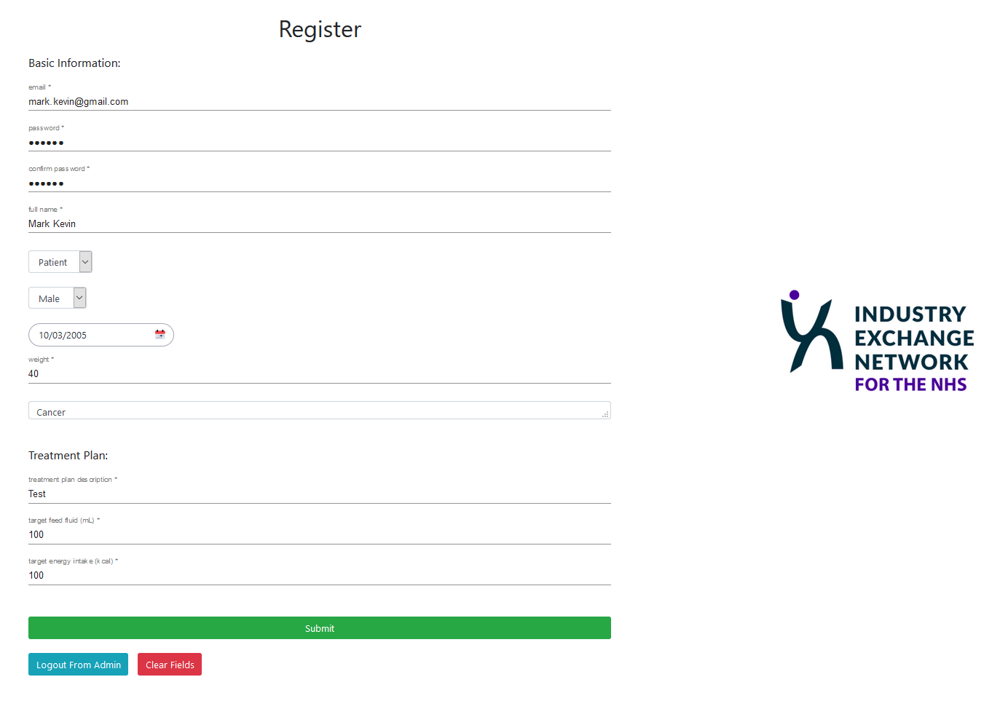

Admin
The admin user is for registering authorised users to the app. This can only be done with the admin user since only approved clinicians or patients whose under a treatment should be using the app. The admin users will not be able to perform any other actions.
Login
The admin will have their logins.
Register
This is the landing page when logged in as an admin. On this page, you will be able to register new users by submitting the user details.
Register Clinicians
To register a clinician, select Clinician as your role. Then input your basic information: email, password, name one by one. All fields required.
Register Patients
Similarly, to register a patient on this page, email, password and name will need to be entered. On top of that, further information including gender, date of birth to calculate age, diagnostic conclusion and initial treatment plan information are also required.
